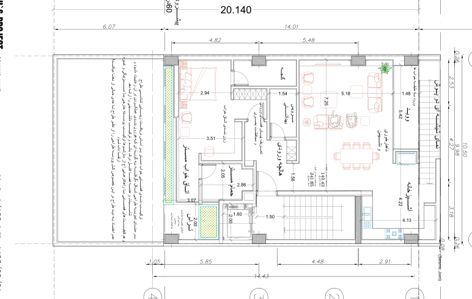

نقشه · طرح ۱۴۰۳
پلان طبقهٔ چهارم — نسخهٔ جایگزین
طبقهٔ چهارم (بالای دوبلکس اصلی)
بازترسیم شماتیک از روی شیت، تقریبی؛ ترازها فرضیاند.
بازترسیم شماتیک از روی شیت، تقریبی؛ ترازها فرضیاند.

{kind=link}
برداشت
تنها برگهٔ ۱۴۰۳ که در آن میشود نشست: از هالچهای که دید را میگیرد وارد میشوند، بعد ناهارخوری و نشیمن با میز هشتنفره و مبلهای نارنجی، پشت پوستهٔ شیشهای دومی رو به کوچه. کنارش آشپزخانهٔ L شکل و وویدی که پلهٔ طبقهٔ پایین در آن بالا میآید؛ رو به حیاط سوئیت مستر با حمام و گنجه، و تراسی کوچک کنار آسانسور. طبقهٔ روزِ دوبلکس اصلی، با پوستهای دوم که کوچه را دور نگه دارد و بامی که مال همین واحد است.
با شاخصها میخواند
- شاخص ۲: میز هشتنفره چسبیده به آشپزخانه؛ پذیرایی بیدویدن.
- شاخص ۱: آشپزخانه کنار نشیمن، در گوشهٔ رو به کوچه.
- شاخص ۴: حمام مستر جدا، با گنجه و زونبندی خواب.
- شاخص ۱۱: نمای شیشهای دوپوسته رو به کوچه، پاسخ معمار به پنجرهای که پشت پرده میماند.
چه چیزی را کم دارد
- بام باغ ترسیم نشده و راه بام فقط برای همین واحد است، برخلاف شاخص نهم.
- تراس و ووید همان چیزی است که صاحب زمین نپذیرفت؛ با بامی در دسترس، تراس زائد است.
- حمام مستر پنجره ندارد.
- نمای سادهای که شاخص دوازدهم میخواست ترسیم نشده؛ فقط یک برچسب روی لبهٔ کوچه است.
چه چیزی اضافه میکند
- هالچهٔ ورودی که پیشفضا میسازد و دید مستقیم به نشیمن را میبندد.
- ووید کنار پله که به گفتهٔ معمار سقف بلند طرح ۱۳۹۹ را در قالب ضوابط بازمیآفریند.
- تنها طبقهٔ ۱۴۰۳ با مبلمان: میشود فهمید کجا مینشینند و کجا غذا میخورند.
چه پرسشی باز میماند
- بام: مشترک یا خصوصی؟ این برگه جواب معمار است، نه خانواده.
- نمایی که پیر شود: پوستهٔ شیشهای دوم چطور با کوچهٔ سنگکاریشده و گذر سالها کنار میآید؟
- دیدن هر دو سو در یک لحظه: نشیمن رو به کوچه است و خواب رو به حیاط؛ میانشان ووید و پله.
چطور میشد بهتر باشد
- میشد تخت مستر به دیوار کنار حمام بچسبد، راهرو جزو اتاق شود و کمدها روی دیوار ورودی بنشینند؛ تراس حذف شود و بام برای همه باز بماند.
- میشد بهجای تراس خصوصی، بام با پرگولا یا سقف حصیری نیمهشفاف پوشیده شود و طبقهٔ پنجمی از آن درآید.
- میشد پیشخوان L شکل جزیره شود تا کار در آشپزخانه رو به میز هشتنفره باشد.
جزئیات روی شیت
- برچسب «نمای شیشهای دو پوش» روی لبهٔ خیابان: پوستهٔ دوم شیشهای جلوی نشیمن.
- «ناهارخوری و نشیمن» ۷٫۲۵×۵٫۱۸ با میز هشتنفره و مبلهای نارنجی؛ تنها طبقهٔ ۱۴۰۳ که مبلمان دارد.
- «ووید» ۵٫۴۲ کنار «ورود به طبقهٔ خوابها» ۱٫۴۸: خالیای که پلهٔ داخلی از طبقهٔ سوم به آن میرسد.
- «آشپزخانه» ۴٫۲۲×۴٫۱۳ در گوشهٔ کنار خیابان با پیشخوان L شکل.
- «هالچهٔ ورودی» با یادداشت «تعریف پیشفضای ورودی و محافظت بصری» و «سرویس بهداشتی» ۱٫۵۴ کنارش.
- «اتاق خواب مستر» ۲٫۹۴×۳٫۰۷ با «زونبندی اتاق خواب» ۳٫۵۱، «حمام مستر» ۲٫۰۵×۲٫۸۶ و «گنجه».
- «تراس» ۲٫۰۰×۲٫۰۰ کنار آسانسور با یادداشت «امکان تعبیهٔ بازشو به تراس بدون مزاحمت دیداری» و باغچهٔ نقطهچین کنار آن.
- نوار باغچه در لبهٔ حیاط و برچسب مساحت «در طبقه: ۱۴۰٫۴۳ / در کل: ۲۴۱٫۸۵» — رقم طبقه از طبقهٔ سوم تکرار شده.
- پاراگراف بلند معمار در حاشیهٔ حیاط و شمارهٔ برگه A3_001 در کادر عنوان.
فضاها
ناهارخوری و نشیمن، آشپزخانه، ووید، ورود به طبقهٔ خوابها، هالچهٔ ورودی، سرویس بهداشتی، اتاق خواب مستر، حمام مستر، گنجه، تراس، پلکان و آسانسور
یادداشت
این نسخهٔ جایگزین طبقهٔ چهارم (۱۴۰۳/۰۸/۲۱ در کادر عنوان) کاملترین برگهٔ ۱۴۰۳ است: نشیمن و آشپزخانهٔ دوبلکس اصلی، سوئیت مستر، تراس و پوستهٔ شیشهای دوم رو به خیابان که پاسخ معمار به سروصدا و تناقض پنجره است. حلنشده: بام باغ ترسیم نشده و دسترسی به بام فقط برای همین واحد است، برخلاف بند ۹؛ ووید و تراس همان ایدهای است که صاحب زمین نپذیرفت. دو ناهماهنگی: برگه نسبت به برگههای دیگر آینهای است (محور D بالا و A پایین) و شمارهٔ A3_001 با برگهٔ زیرزمین یکی است. یادداشت حاشیه دفاع معمار از ترکیب سوئیت مستر است: زونبندی عملکردی، تناسبات خوانا، بازشوها و سبزینگی روی پوستهٔ بیرونی، به پشتوانهٔ تجربه و زیباییشناسی طراح؛ و این که به باور او بیاعتمادی به دید طراح، فرایند طراحی را تا حدی بیمعنا میکند. نام نقشه در کادر: 4TH-ALT.